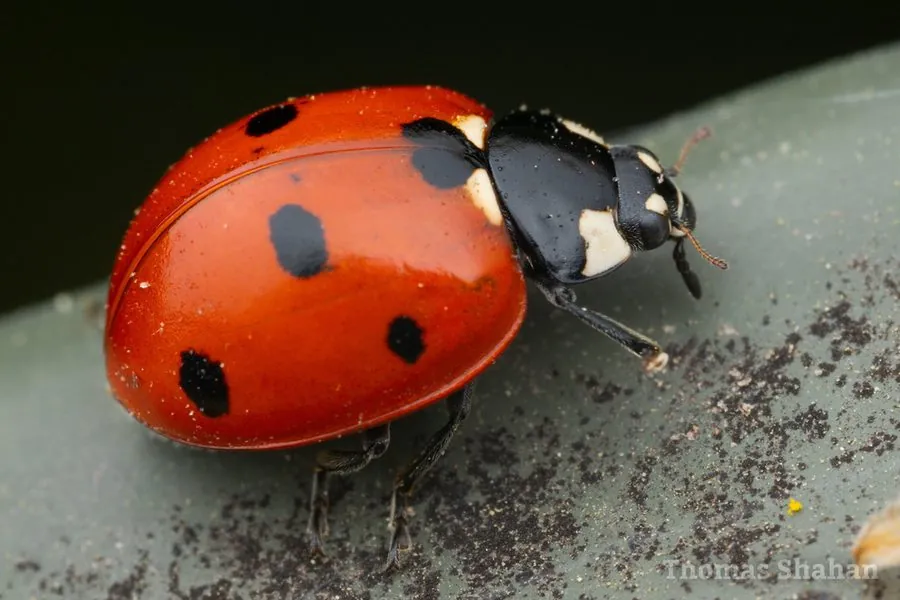

昆虫 · 动物界
七星瓢虫 Coccinella septempunctata

鞘翅上带七个黑斑的常见捕食性瓢虫，幼虫和成虫都以蚜虫为食，是农田和园林中重要的生物防治天敌。
- 分类
- 门节肢动物门纲昆虫纲目鞘翅目科瓢虫科属瓢虫属
- 栖息环境
- 农田、果园、菜地与园林，凡有蚜虫聚集的植物上常见
- 地理分布
- 欧洲、亚洲和北美洲，已被多国引入用于生物防治
- 保护级别
- 暂无评估
物种志
七星瓢虫成虫体长约 5–8 mm，身体半球形，鞘翅红色至橙红色，共有 7 个黑色斑点，即每片鞘翅 3 个、翅缝基部 1 个；前胸背板黑色，两侧各有一个白斑。幼虫体色深黑，带橙黄色斑块，外形像一条小鳄鱼，行动敏捷。
成虫和幼虫都以蚜虫为食，也捕食粉虱、叶螨等小型害虫，一只幼虫在化蛹前可吃掉数百只蚜虫，成虫一天可捕食蚜虫数十至上百只。一年可发生 2–3 代，成虫在树皮缝、石缝和建筑物缝隙中群集越冬。受惊时它会分泌黄色生物碱液体，散发异味，使鸟类等天敌避食。七星瓢虫分布于欧洲、亚洲和北美洲，被多国引入用于生物防治，是农田和园林中最受重视的益虫之一。
形态与习性
- 食性成虫和幼虫捕食蚜虫，也吃粉虱、叶螨等小型害虫
- 体长约 5–8 mm
- 食量成虫一天可捕食蚜虫约 50–100 只
- 生活史一年可发生 2–3 代，成虫在缝隙中群集越冬
- 防御受惊时分泌黄色生物碱液体，鸟类多避食
- 生态作用生物防治蚜虫的重要天敌
趣味知识
- 七星瓢虫的七个黑点分布固定：每片鞘翅三个，翅缝基部一个。
- 一只七星瓢虫幼虫在化蛹前可捕食数百只蚜虫。
- 冬季它们常几十上百只聚集在墙缝、树皮下越冬。
生态关系
- 捕食 → 棉蚜 瓢虫是蚜虫的天敌